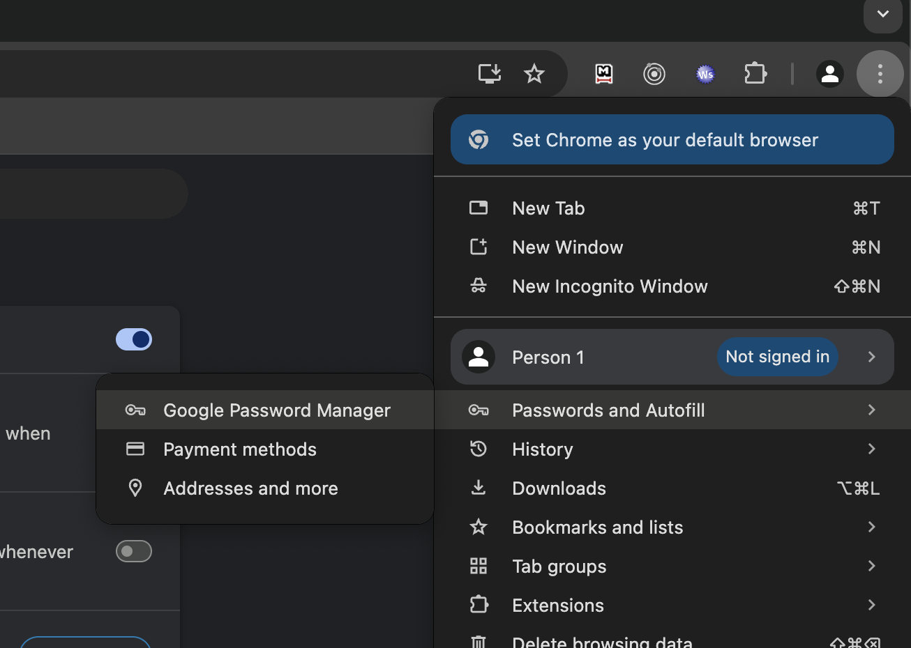

Browsers
Een van de makkelijkste stappen die je kan zetten is een andere browser gebruiken. Stap af van Chrome. Goeie alternatieven zijn:
- Brave
Firefox*- Zen Browser (modernere versie van Firefox)
- LibreWolf (privacy variant van Firefox)
- Mullvad
* Er is recentelijk ophef ontstaan rondom Firefox. Zij hebben namelijk een regel uit hun privacy statement verwijderd waarin zij beloofden NOOIT een gebruiker's data te verwijderen. Het verwijderen van die regel heeft een deur open gezet zodat ze dat wel kunnen doen. Veel mensen zijn hun vertrouwen in FireFox hiermee kwijt geraakt
Je kan de browser natuurlijk gewoon installeren en gebruiken, maar vergeet je gegevens niet over te zetten. En dan bedoel ik: je bookmarks en je wachtwoorden.
Bookmarks overzetten
Bookmarks exporteren uit Chrome
- Open Chrome en ga naar
Bookmarks -> Bookmarks manager - Klik op de 3 puntjes rechts bovenin de hoek
- Export bookmarks (als een
.htmlbestand)
Bookmarks importeren in Brave
- Open Brave en ga naar
Bookmarks -> Bookmarks manager - Klik op de 3 puntjes rechts bovenin de hoek
- Import bookmarks
- Selecteer het bestand wat je vanuit Chrome hebt gedownload
Bookmarks importeren in Firefox/Zen
- Open de browser en ga naar
Bookmarks -> Bookmarks manager - Er opent een nieuw window
- Klik op de 'boven/beneden' pijltjes en
Import bookmarks from html
Passwords overzetten
Passwords exporteren uit Chrome
- Open Chrome
- Klik op de 3 puntjes rechts bovenin de hoek:
Passwords & autofill -> Google password manager Settings -> Export passwords
Bookmarks importeren in Brave
- Open Brave
- Klik op de 3 puntjes rechts bovenin de hoek:
Passwords & autofill -> Google password manager Settings -> Export passwords- Klik op de link naar
Select a csv-file - BELANGRIJK: verwijder je passwords file nadat je hem hebt geïmporteerd!
Bookmarks importeren in Firefox/Zen
- Open de browser en klik op de drie puntjes rechtsbovenin
passwords - rechtsbovenin staan wederom drie stipjes met opties om passwords te importeren
- BELANGRIJK: verwijder je passwords file nadat je hem hebt geïmporteerd!